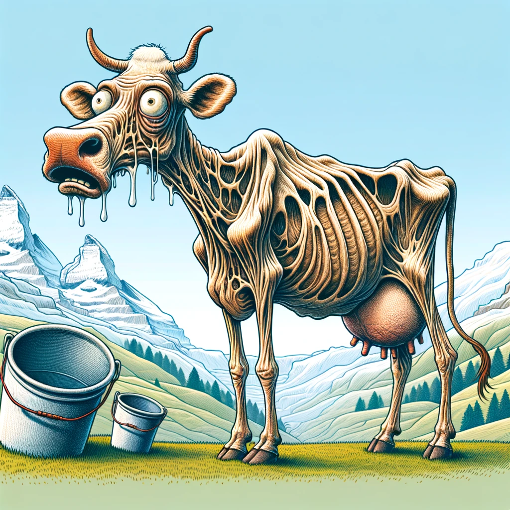

Die durstige Kuh: Wie Produktionsschocks im Schweizer Milchmarkt gefunden werden
Milch
Hitze
Entwicklung eines mathematischen Modells zur Erkennung von extremen Änderungen der Milchproduktion
Autor:innen
Corinne Straub
Damian Oswald
Veröffentlichungsdatum
15. März 2024
Zusammenfassung
In diesem hypothetischen Blogbeitrag untersuchen wir einen innovativen Algorithmus, der in der Lage ist, Schocks in der Schweizer Milchproduktion zu identifizieren. Angesichts der zentralen Rolle, die die Milchwirtschaft in der Schweiz spielt, bietet dieser Algorithmus landwirtschaftlichen Betrieben und politischen Entscheidungsträgern ein mächtiges Werkzeug, um auf unvorhergesehene Veränderungen im Milchmarkt reagieren zu können. Durch die Analyse historischer Daten und aktueller Trends kann der Algorithmus frühzeitig Warnsignale erkennen, die auf potenzielle Störungen hinweisen. Dieser Beitrag beleuchtet die Funktionsweise des Algorithmus, seine praktische Anwendung und die möglichen Auswirkungen auf die Schweizer Landwirtschaft. Begleitet wird der Beitrag von einer humorvollen Illustration, die eine Schweizer Milchkuh zeigt, die scheinbar keine Milch mehr produzieren kann – eine spielerische Anspielung auf die ernsten Herausforderungen, die Schocks in der Milchproduktion darstellen können.

Schreiben einer SPARQL-Abfrage
Zuallererst werden die Daten direkt über agrarmarktdaten.ch eingezogen. Die Daten sind als Linked Open Data verfügbar und können dementsprechend über eine SPARQL-Abfrage gezielt verknüpft und heruntergeladen werden.
Abbildung 1: Die täglich produzierte Milchmenge über die Jahre (schwarz) sowie die saisonal korrigierte Milchmenge.
Erkennung von schockähnlichen Produktionsveränderungen
\[z = \frac{\Delta y - \mu}{\sigma} \tag{1}\]
Hierbei ist \(y\) die tägliche Milchproduktion, \(\Delta y\) ist die Veränderung der täglichen Milchproduktion im Vergleich zum Vormonat, \(\mu\) ist das Arithmetische Mittel von \(\Delta y\) und \(\sigma\) die Standardabweichung von \(\Delta y\).